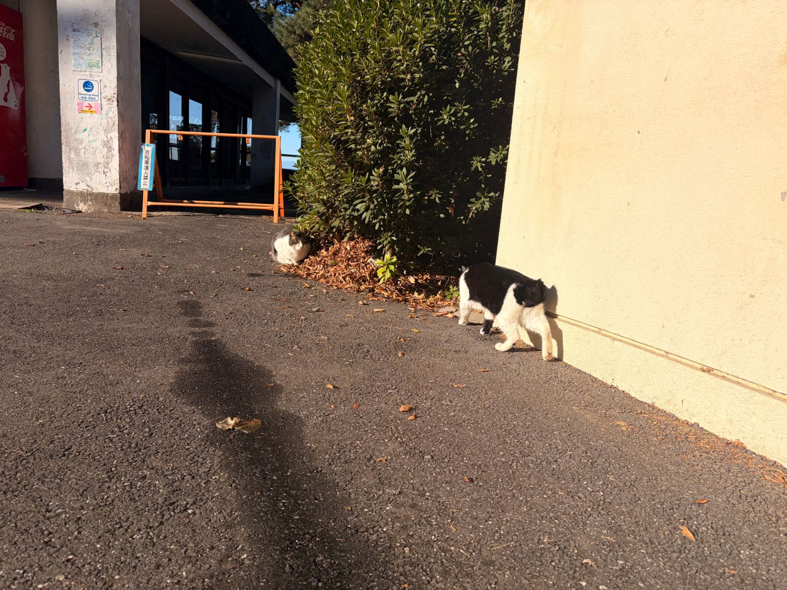
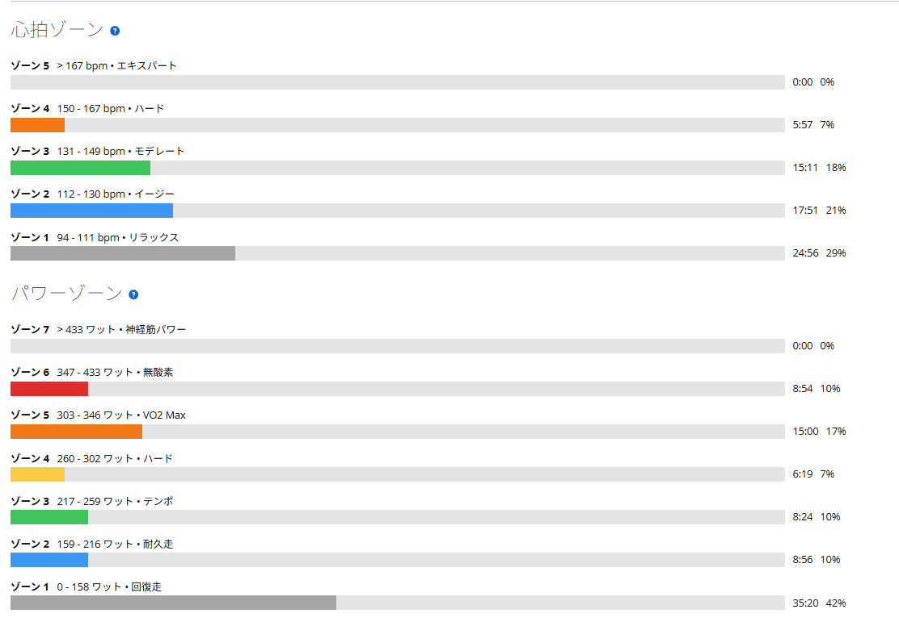

冬の唐沢で5分走×5本。寒さに震えながらも、脚は思った以上に好調だった
11月に入って、いよいよ冬が近づいてきた。今日は時間が限られていたので、短時間で高強度をこなせる唐沢の5分走×5本を予定。ただ、最初から絶対にやると決めていたわけではない。脚の調子が悪ければ、無理に高強度を狙わず、唐沢を繰り返し登る通常のヒルクライム練習に切り替えるつもりだった。
結果から言えば、思っていた以上にパワーが出た。しかも、そこまで脚が辛くなかった。これはちょっと意外だった。

すっかり冬の唐沢
朝の気温はかなり低く、サイコンに記録された最低気温は4℃、平均気温も5.6℃だった。さすがに寒いので、今日は真冬用の装備を引っ張り出した。以前から少し気になっていた膝のこともあり、寒さの影響が心配だったが、走っている間に痛みが出ることはなかった。これには一安心である。

唐沢には猫がいて、冬の日差しの中で過ごしていた。空もすっかり冬らしくなっていて、少し前まで暑さを気にしながら走っていたのが嘘のようだ。今日はAethos2で出発。寒さは厳しいが、天気は良い。あとは脚がどこまで動いてくれるか。
5本平均327W。目標の330W前後に近づいた
メニューは5分間の高強度走を5本。レストは下りを利用して4分前後。FTP289Wに対して、目標は330W前後に設定した。
| 本数 | 10月29日 | 11月11日 |
|---|---|---|
| 1本目 | 321W | 318W |
| 2本目 | 332W | 334W |
| 3本目 | 337W | 324W |
| 4本目 | 335W | 326W |
| 5本目 | 341W | 334W（約5分50秒） |
| 平均 | 333.2W | 327.2W |
1〜4本目はいずれも約5分。5本とも318〜334Wでまとめられ、平均はFTPの約113%。目標の330W前後にも近く、まずまずの結果だ。特に5本目は5分を超えて、約5分50秒まで334Wを維持できた。
寒かったこともあって、今回は限界まで踏み切ることはしなかった。もちろん楽だったわけではない。きついものはきつい。ただ、完全に出し切って終わったわけでもないので、まだ少し余力はあったと思う。
前回の10月29日と比べると、平均出力は前回の方が約6W高い。数字だけ見れば今回は少し落ちた。ただ、今回は5本目を約50秒長く走っているし、体感的にも脚の辛さはそこまで強くなかった。前回より強くなったと断定できる記録ではないが、余裕を残しながら高強度をこなせたのは収穫だと思う。
約30km・NP257W・TSS109
- 全体29.64km / 1時間23分29秒 / 獲得679m / 平均気温5.6℃
- 負荷平均179W / NP257W / IF0.889 / TSS109.2 / FTP設定289W
- 心拍・回転平均120bpm / 最大166bpm / 平均81rpm

1時間23分ほどのライドだが、TSSは109。短時間とはいえ、なかなか負荷の高い練習になった。パワーのゾーン5と6の滞在時間は合わせて約24分。高強度の刺激は十分に入れられたと思う。
なぜか心拍が上がらない
今回もうひとつ不思議だったのが心拍数だ。普段なら320〜330Wで5分間踏めば、それなりに心拍が上がる。ところが今日は、なぜか低かった。
| 本数 | 出力 | 心拍平均 | ケイデンス |
|---|---|---|---|
| 1本目 | 318W | 135bpm | 90rpm |
| 2本目 | 334W | 129bpm | 84rpm |
| 3本目 | 324W | 117bpm | 83rpm |
| 4本目 | 326W | 124bpm | 81rpm |
| 5本目 | 334W | 139bpm | 83rpm |
特に3本目は324Wを出しているのに、平均心拍117bpm。さすがに低すぎる気がする。
ケイデンスが低くなっていることも関係しているのかと思ったが、同じ83rpmでも5本目は139bpmなので、それだけでは説明できない。しかも、下りのレスト中も普段より心拍が下がるのが早く感じられた。
疲労管理と、心拍の答えはまだ出ない
心拍については、まあ、そうだろう。センサーの問題なのか、気温の影響なのか、それとも身体の変化なのか。今ここで原因を考えても答えは出ない。今後の練習でも同じ傾向が続くのか、少し様子を見ていこうと思う。
脚が動いた理由も、はっきりとは分からない。一昨日はSSTを入れているので、軽い2日間とは言えない。ただ、そのSSTは3本目を途中でやめていて、昨日は軽めのローラー。高強度を重ねなかった分、疲労が抜けていたのかもしれない。練習はただTSSを積み上げれば良いわけではない。疲労を抱えた状態で練習する日もあれば、疲労が抜けた状態で高強度の質を高める日も必要だ。今回のように脚が動くと、やはり疲労管理の大切さを感じる。
5分走が良くても、富士ヒルが速くなるとは限らない
目標はローラーで1時間300Wを維持できるようになること。そして2027年の富士ヒルゴールドだ。5分走は、高い出力を繰り返し出す能力を鍛えるための練習。一方で、富士ヒル本番に必要なのは、長時間にわたって高い出力を維持する力だ。だから、5分走で良い数字が出たからといって、富士ヒルが速くなると単純には言えない。SSTや長めの閾値走も引き続き積み重ねていく必要がある。
それでも、今回のように思った以上に脚が動いてくれる日は嬉しい。これからさらに寒くなるが、冬の間もしっかり練習を続けたい。次はどこまで伸ばせるだろうか。寒さに負けず、でも無理はしすぎず。富士ヒルゴールドへの挑戦は、まだまだ続く。